2026-01-26
EndeavourOS は Arch Linux
をベースにしたディストリビューション。
Calamares で簡単にインストールできる。
日本語フォントが入っているので文字化けしない。
オンラインインストールを選択できるので、最新の環境をすぐに使える。
CachyOS などと比べて独自パッケージが少なく、純正のArch
Linuxに近い。
こちら。
Ventoy
はブータブルUSBドライブを作成するツール。
Ventoy
をUSBドライブにインストールした後にOSのISOファイルをUSBメモリにコピーすると、そのOSを起動できるようになる。複数のISOファイルをコピーすると、起動するOSを選択できる。
ventoy-*-linux.tar.gz をダウンロードして展開。
USBメモリを差し込んで Ventoy のインストーラーを起動。
./VentoyGUI.x86_64
インストール先を必ず確認。
新規の場合は「Install」を選択。USBメモリ内のファイルはすべて消える。
アップデートの場合は「Update」を選択。USBメモリ内のファイルは維持される。
EndeavourOS のISOファイルをUSBメモリにコピーする。
Kubuntu
などの利用者が多いOSのISOファイルもコピーしておく。EndeavourOS
のインストールが失敗したとき、別のOSのISOファイルがないと何もできなくなる。
USBメモリを挿してPCの電源を入れ、ブートメニューキーを押す。
ブートメニューキーは次のとおり。
| メーカー | ブートメニューキー |
|---|---|
| ASUS | F8 |
| ASRock | F11 |
| GIGABYTE | F12 |
| MSI | F11 |
ブートメニューキーを押すとブートデバイスの選択画面が出る。
あらかじめUEFIで「CSM
Support」を無効にしておくと、UEFIブートに対応していないデバイスが非表示になるので、選択が楽になる。

Ventoy のメニューでISOファイルを選択。
しばらく待つとデスクトップが起動する。
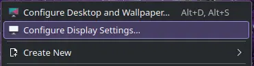
文字が小さいときは壁紙を右クリックして「Configure Display
Settings…」を選択。

「Global scale」のスライダーを右に動かして「125%」にする。
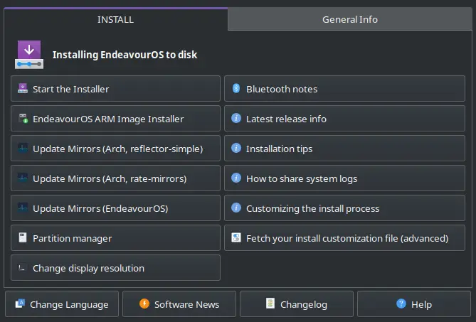
左上の「Start the installer」をクリック。
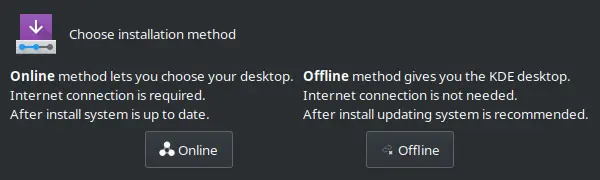
インストール方法は「Online」を選択。最新のパッケージをネットからダウンロードしてインストールする。「Offline」を選択するとKDEデスクトップしか選べないし、インストール後のシステムアップデートが膨大になる。
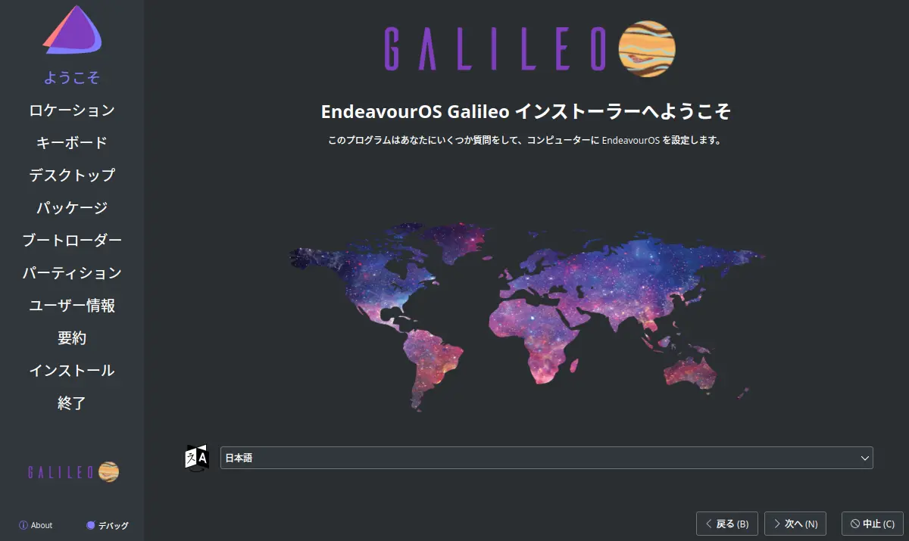
「日本語」が選択されているのを確認して「次へ」をクリック。
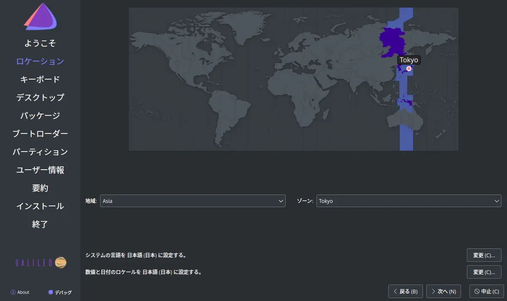
「Tokyo」が選択されているのを確認。

キーボードモデルを選択。
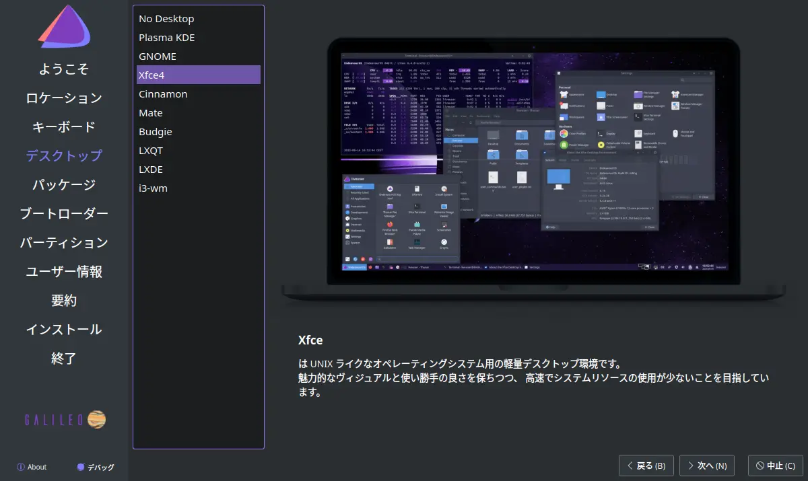
デスクトップを選択。
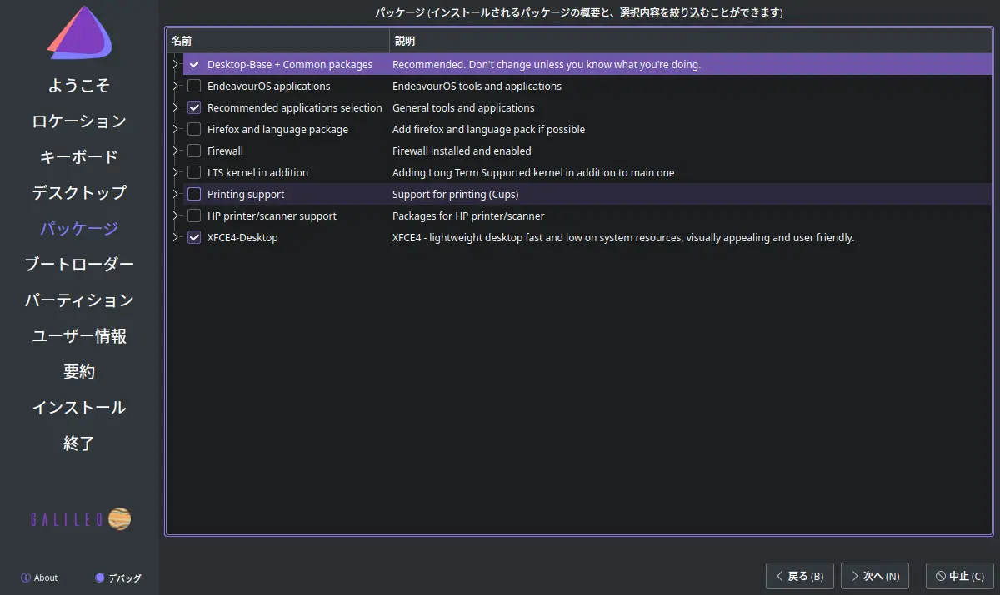
インストールするパッケージを選択。
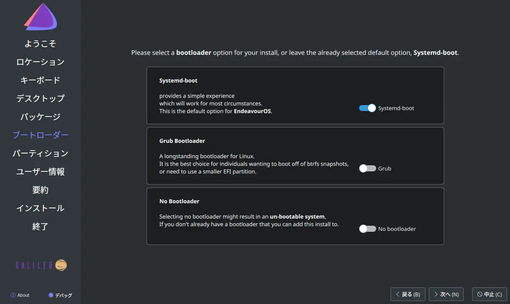
ブートローダーを選択。デフォルトは systemd-boot 。
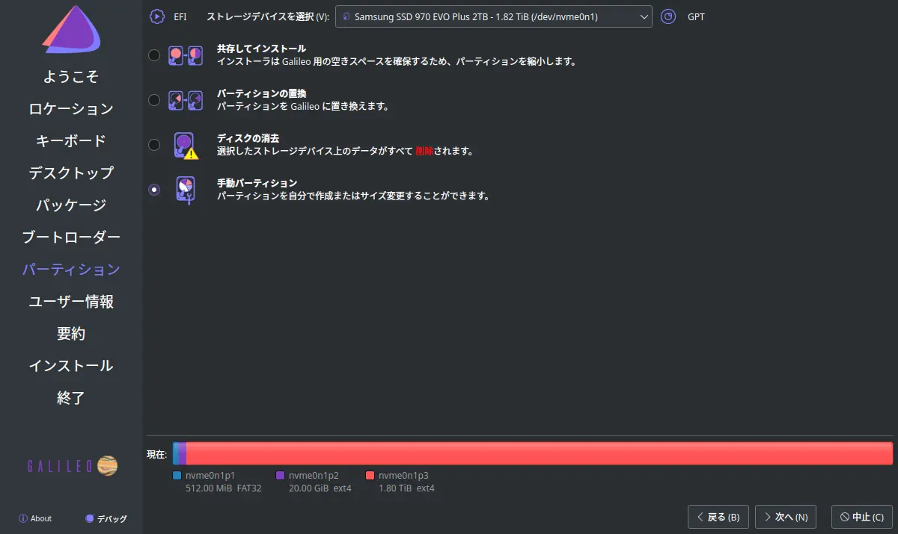
「手動パーティション」を選択。
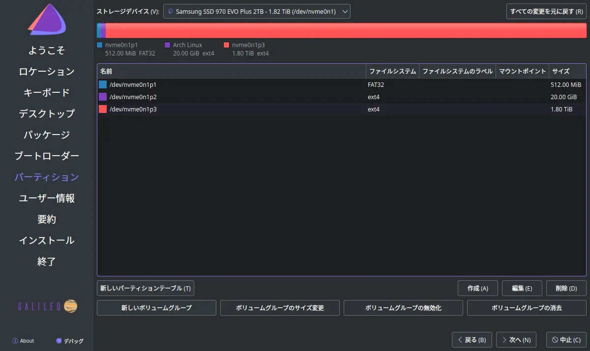
パーティションを作成。
私は次のようにしています。余裕をもたせるなら「/」は 30000 MiB
にする。
| パーティション | サイズ | フォーマット | ファイルシステム | フラグ |
|---|---|---|---|---|
| /efi | 2048 MiB | する | fat32 | boot |
| / | 20000 MiB | する | ext4 | なし |
| /home | 残り全部 | しない | ext4 | なし |
「/home」は初めて作成する場合のみフォーマット。
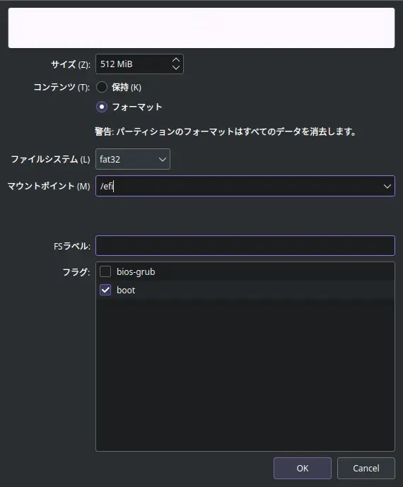
/efi パーティションの編集例。
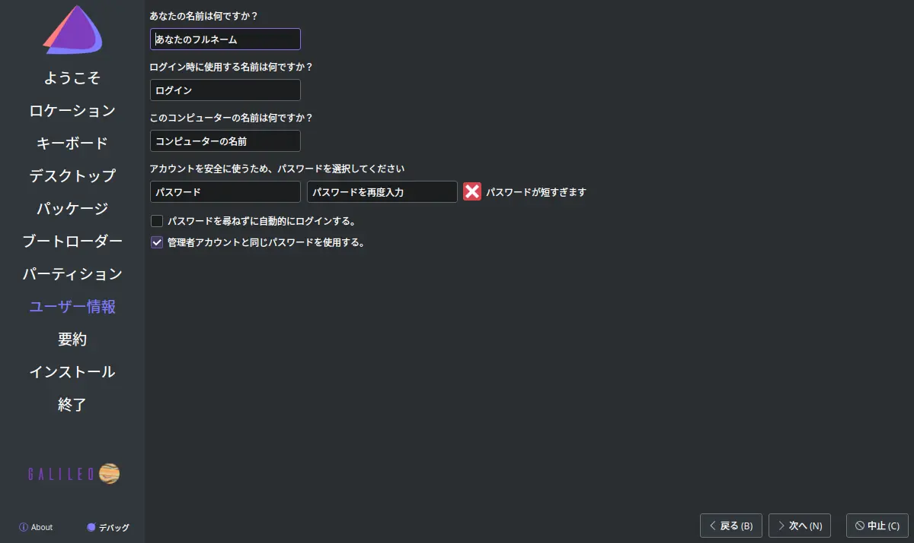
ユーザー名とパスワードを設定。
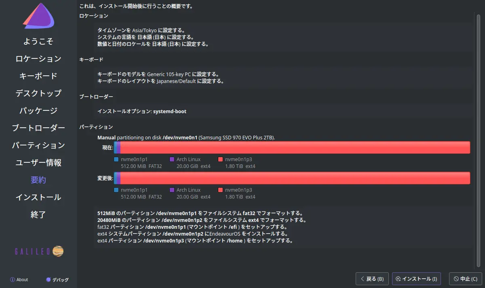
内容を確認して「インストール」をクリック。
インストールが終わったら再起動して設定を行う。